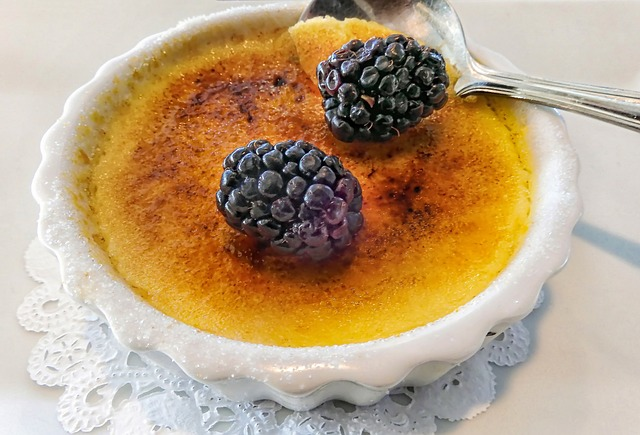

Baking
Welcome to my baking world, where flour meets sugar, and creativity comes to life! Baking is not just a hobby for me; it's a sweet escape into a world of delicious delights. Whether it's whipping up a batch of cookies or crafting intricate cakes, I find joy in every step of the baking process.
Creme Brulee
One of my favorite treats to make is creme brulee. This classic dessert combines rich custard with a crunchy caramelized sugar topping. With this simple recipe, you can recreate this decadent delight in your own kitchen. Just a few ingredients and a little patience, and you'll have a dessert that's sure to impress your friends and family.
Cakes

But let's not forget about cakes! Cakes are like edible canvases, waiting to be decorated and devoured. From fluffy vanilla cakes to indulgent chocolate creations, there's a cake for every occasion. Whether it's a birthday, anniversary, or just a Tuesday night, baking a cake always brings smiles. The cake shown here is a white chocolate raspberry cake made for my mother’s birthday.